flowchart TB A[School] B[SES] C[Gender] D[Reading Scores] E[Math Scores] F[Science Scores] D --> A D --> B D --> C E --> A E --> B E --> C F --> A F --> B F --> C
Take-home Exercise 2: DataVis Makeover
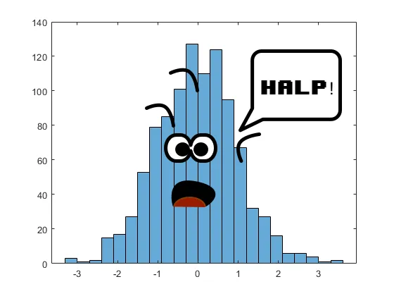
1 Setting the scene
1.1 The Task
In this take-home exercise, you are required to:
select one of the Take-home Exercise 1 prepared by your classmate,
critic the submission in terms of clarity and aesthetics,
prepare a sketch for the alternative design by using the data visualisation design principles and best practices you had learned in Lesson 1 and 2, and
remake the original design by using ggplot2, ggplot2 extensions and tidyverse packages.
Remember Take-home Exercise 1
The 2022 Programme for International Student Assessment (PISA) data was released on December 5, 2022. PISA global education survey every three years to assess the education systems worldwide through testing 15 year old students in the subjects of mathematics, reading, and science.
In this take-home exercise, you are required to use appropriate Exploratory Data Analysis (EDA) methods and ggplot2 functions to reveal:
the distribution of Singapore students’ performance in mathematics, reading, and science, and
the relationship between these performances with schools, gender and socioeconomic status (SES) of the students.
1.2 Getting Started
1.2.1 Installing R packages and loading the dataset
The code chunk below uses p_load() of pacman package to check if the necessary packages are installed in the computer. If they are, then they will be launched into R.
code block
pacman::p_load(ggrepel, patchwork,
ggthemes, hrbrthemes,
tidyverse, kableExtra,
haven, dplyr,
ggdist, ggridges,
colorspace, ggpmisc) The code chunk below reads the .rds file that contains cleaned data about students from Singapore.
code block
cleaned_data <-
read_rds("data/cleaned_studata.rds")2 Data Visualisations Makeover
The data visualisations were taken from here. I will be doing the makeover according to my favourite ggtheme theme_fivethirtyeight()
2.1 Distribution Across Three Subjects - Mathematics, Reading and Science
The author stated:
We will now do the plot for each respective subject. We will be doing a histogram to show the distribution across three subjects. The figure in the tabset below displays a composite of three histograms, seamlessly created using patchwork. This is specifically designed for merging separate ggplot2 graphs into a unified figure. The red dotted line indicates the mean.
He later went on to conclude:
The histogram presented above offers a visual representation of the distribution of scores across three academic subjects: MATHEMATICS, READING and SCIENCE. The distribution pattern observed for each subject strongly aligns with the characteristics of a normal distribution (bold my own).
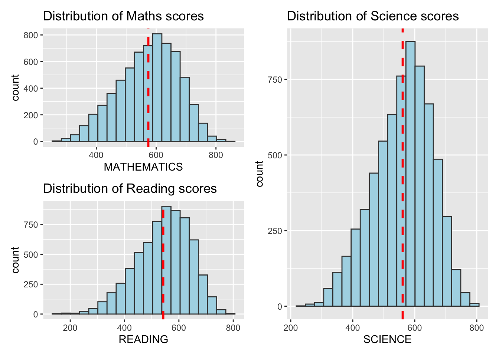
A normal distribution is characterised by a symmetrical bell-shaped curve, with the majority of data points clustering around the mean and gradually tapering off towards the extremes. In the context of academic performance, this implies that a significant proportion of students scored close to the average, while fewer students achieved scores either significantly above or below the mean.
2.1.1 Own Thoughts
One key issue I want to highlight is the author’s conclusion that the distributions of all three scores are normal. My own personal conclusion were the distributions were left-skewed.
Visual Challenges
- The visualisations did not clearly represent if the distributions were normal or left-skewed.
2.1.2 Critique: Clarity and Aesthetics
This uncertainty could be due to how the data was visualised. By using the principles from A Layered Grammar of Graphics,
Level 7: Theme (Colour | Space)
Aesthetics
- The blue and red, while to provide contrast, does not blend well with the other colours.
- Grid lines are soft and not distracting.
Clarity
- The patchwork neatly puts all the plots in one diagram but the dimensions are not equally spaced for each plot (it seems that Science scores are given more weightage than the rest).
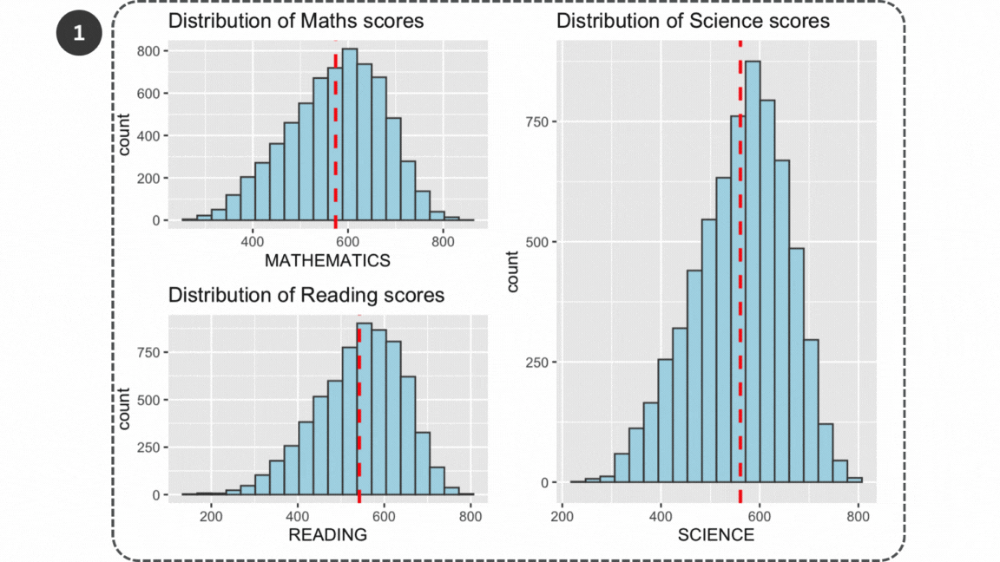
Level 7: Theme (Text)
Aesthetics
- There is too much cluttered text: the titles and axes labels are not well placed.
- count is not placed vertically: may not be necessary
Clarity
There is no overall main title or lead-in to provide a context .e.g. the purpose and the story of the data visualisation.
The titles are repeated e.g. Math scores and Mathematics.
The axes are not well-labelled e.g. Mathematics as the x-axis.
There is no data source caption included.
Level 6: Coordinates | Level 5: Statistics | Level 3: Geometries | Level 2: Aesthetics
Clarity
The max labelled counts on the x-axis for the three plots are not consistent - 800 for Mathematics vs 750 for Reading and Science.
The units of the y-axis for the three plots are not consistent - Math is 400, 600, 800 vs 200, 400, 600 and 800 for Reading and Science; and Science’s x-axis starts at 200 while the rest appears to start at 0.
The reference line (the mean) was very important for readability but still failed to fully convey if it was a normal or left-skewed distribution.
2.1.3 Sketch
These are my proposed main changes:
A well-crafted title and subtitle to provide context.
Add a median line together with the mean to clearly portray skewness.
Add a probability density plot to clearly visualise the distribution.
Standardise the axes to improve comparability and interpretability.
Put the three plots side-by-side to improve readability.
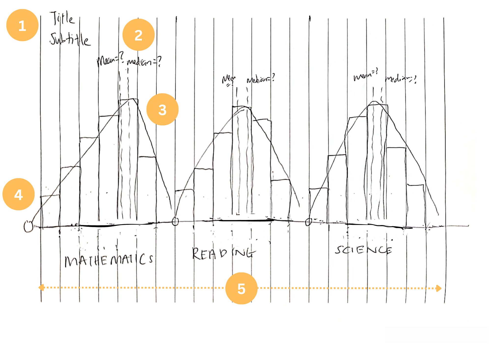
2.1.4 Makeover
The code chunk below prepares the individual histogram plots for each subject.
code block
math <- ggplot(data = cleaned_data, aes(x = MATH)) +
geom_histogram(aes(y = after_stat(density)), bins = 20,
boundary = 100,
color = "grey25",
fill = "grey90",
linewidth = 0.3) +
geom_density(linewidth = 0.2) +
coord_cartesian(xlim = c(0, 1000), ylim = c(0, 0.0045)) +
geom_vline(data = cleaned_data %>%
summarize(mean_score = mean(MATH), median_score = median(MATH)),
aes(xintercept = median_score), color = "#008FD5", linetype = "dashed") +
geom_text(data = cleaned_data %>%
summarize(mean_score = mean(MATH), median_score = median(MATH)),
aes(x = median_score - 100, y = Inf, label = paste("Median:", round(median_score, 0))),
color = "#008FD5", vjust = 1, hjust = -0.55, size = 3) +
geom_vline(data = cleaned_data %>%
summarize(mean_score = mean(MATH), median_score = median(MATH)),
aes(xintercept = mean_score), color = "#77AB43", linetype = "dashed") +
geom_text(data = cleaned_data %>%
summarize(mean_score = mean(MATH), median_score = median(MATH)),
aes(x = mean_score - 100, y = Inf, label = paste("Mean:", round(mean_score, 0))),
color = "#77AB43", vjust = 1, hjust = 0.55, size = 3) +
scale_x_continuous(breaks = seq(0, 1000, by = 200),
minor_breaks = seq(0, 1000, by = 100)) +
ylab(NULL) + xlab('Distribution of Math Scores')
math
code block
read <- ggplot(data=cleaned_data,
aes(x= READ)) +
geom_histogram(aes(y = after_stat(density)), bins = 20,
boundary = 100,
color = "grey25",
fill = "grey90",
linewidth = 0.3) +
geom_density(linewidth = 0.2) +
coord_cartesian(xlim = c(0, 1000), ylim = c(0, 0.0045)) +
geom_vline(data = cleaned_data %>%
summarize(mean_score = mean(READ), median_score = median(READ)),
aes(xintercept = median_score), color = "#008FD5", linetype = "dashed") +
geom_text(data = cleaned_data %>%
summarize(mean_score = mean(READ), median_score = median(READ)),
aes(x = median_score - 100, y = Inf, label = paste("Median:", round(median_score, 0))),
color = "#008FD5", vjust = 1, hjust = -0.55, size = 3) +
geom_vline(data = cleaned_data %>%
summarize(mean_score = mean(READ), median_score = median(READ)),
aes(xintercept = mean_score), color = "#77AB43", linetype = "dashed") +
geom_text(data = cleaned_data %>%
summarize(mean_score = mean(READ), median_score = median(READ)),
aes(x = mean_score - 100, y = Inf, label = paste("Mean:", round(mean_score, 0))),
color = "#77AB43", vjust = 1, hjust = 0.55, size = 3) +
scale_x_continuous(breaks = seq(0, 1000, by = 200),
minor_breaks = seq(0, 1000, by = 100)) +
ylab(NULL) + xlab('Distribution of Reading Scores')
read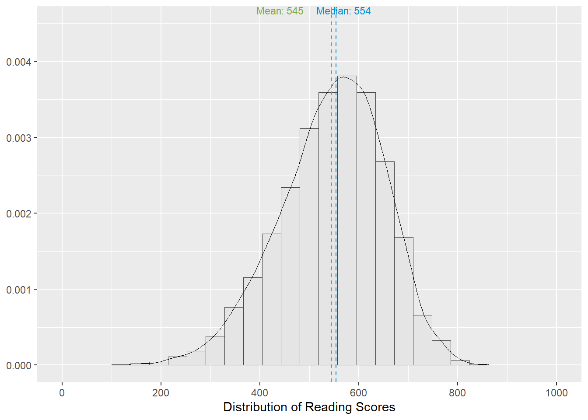
code block
sci <- ggplot(data=cleaned_data,
aes(x= SCIENCE)) +
geom_histogram(aes(y = after_stat(density)), bins = 20,
boundary = 100,
color = "grey25",
fill = "grey90",
linewidth = 0.3) +
geom_density(linewidth = 0.2) +
coord_cartesian(xlim = c(0, 1000), ylim = c(0, 0.0045)) +
geom_vline(data = cleaned_data %>%
summarize(mean_score = mean(SCIENCE), median_score = median(SCIENCE)),
aes(xintercept = median_score), color = "#008FD5", linetype = "dashed") +
geom_text(data = cleaned_data %>%
summarize(mean_score = mean(SCIENCE), median_score = median(SCIENCE)),
aes(x = median_score - 100, y = Inf, label = paste("Median:", round(median_score, 0))),
color = "#008FD5", vjust = 1, hjust = -0.55, size = 3) +
geom_vline(data = cleaned_data %>%
summarize(mean_score = mean(SCIENCE), median_score = median(SCIENCE)),
aes(xintercept = mean_score), color = "#77AB43", linetype = "dashed") +
geom_text(data = cleaned_data %>%
summarize(mean_score = mean(SCIENCE), median_score = median(SCIENCE)),
aes(x = mean_score - 100, y = Inf, label = paste("Mean:", round(mean_score, 0))),
color = "#77AB43", vjust = 1, hjust = 0.55, size = 3) +
scale_x_continuous(breaks = seq(0, 1000, by = 200),
minor_breaks = seq(0, 1000, by = 100)) +
ylab(NULL) + xlab('Distribution of Science Scores')
sci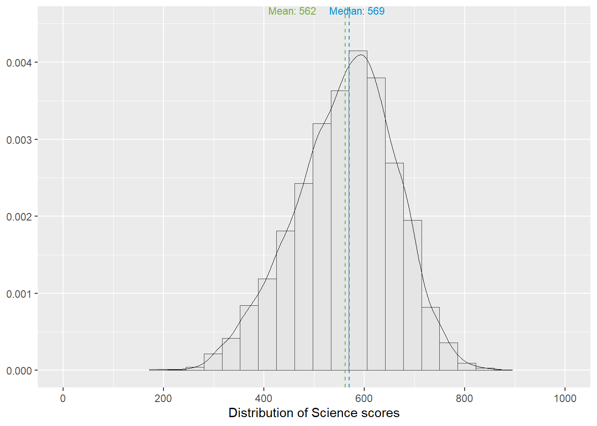
The code chunk below prepares the individual histogram plots for each subject as a composite figure.
code block
patchwork <- math + read + sci
patchwork <- patchwork +
plot_annotation(
title = "Singapore students score exceptionally well in Maths, Reading and Science.",
subtitle = "More than 50% of students have scores higher than the mean across the three PISA subjects.",
caption = "Data source: OECD PISA 2022",
theme = theme(plot.title = element_text(size = 50))
)
patchwork & theme_fivethirtyeight(base_size = 10) +
theme(
panel.grid.minor.x = element_line(linewidth = 0.2, linetype = 'solid', colour = "grey85"),
plot.title = element_text(face = "bold"), axis.title=element_text(face = "bold", size=9))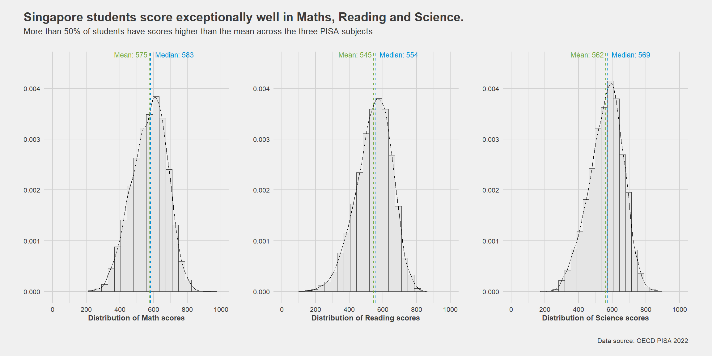
2.2 Reading vs Mathematics
The author stated:
The scatterplot… illustrates a positive correlation between reading and mathematics values. As the reading values increase, so do the corresponding mathematics values. This relationship is further emphasised by the upward trend observed in the best fit line. The consistent increase in one variable is mirrored by a proportional increase in the other. In light of these findings, it can be confidently asserted that a positive connection exists, suggesting that engaging in reading contributes to enhanced performance in mathematics among students (bold my own).
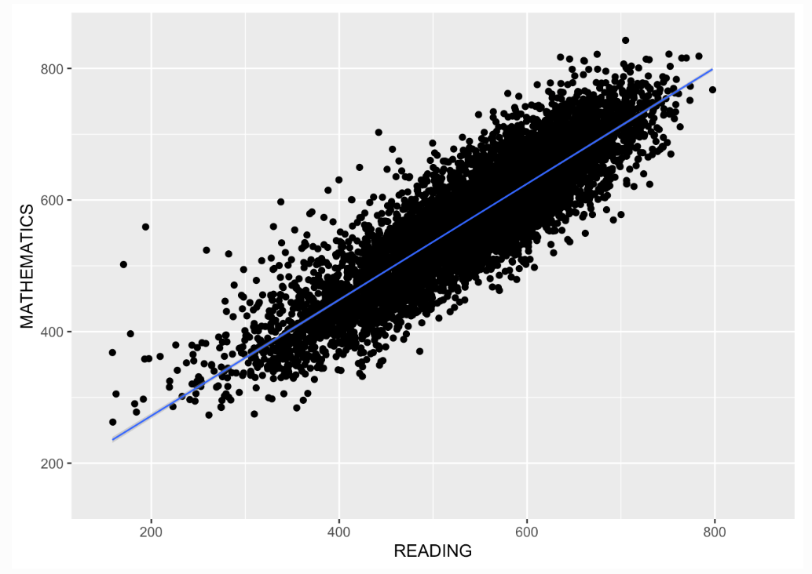
The author took this perspective because:
With reference to this research paper titled ‘Reading matters more than mathematics in science learning: an analysis of the relationship between student achievement in reading, mathematics, and science’ by Yuanze Zhu, the results revealed that proficiency in reading and mathematics strongly correlated with science achievement, with reading exerting a more substantial influence than mathematics.
2.2.1 Own Thoughts
The author’s intention of this data visualisation is a little confusing to me - is the author trying to expose the significant influence of reading on the other subjects? Why does he only focus on one data visualisation with X = Reading and Y = Mathematics?
Bearing in mind that the plot intends to visualise the relationship between two continuous variables, I also automatically thought of the scatterplot. However, while it does visualise the relationship, the data visualisation does not seem intuitive, despite the presence of the linear model line.
Visual Challenges
How can we visually tease out the relationship of reading on the other subjects and vice versa?
The visualisation is messy due to overplotting - is there a better way to visualise the relationship between two continuous variables?
How can we improve the identification of correlational relationships in a scatterplot?
2.2.2 Critique: Clarity and Aesthetics
By using the principles from A Layered Grammar of Graphics,
Level 7: Theme (Colour | Space)
Aesthetics
- The choice of black and blue provided a nice contrast.
- Grid lines are soft and not distracting.
Clarity
- It was confusing to use only one data visualisation on two subjects to tease out the relationship between subjects.
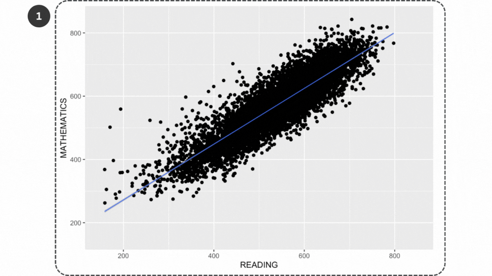
Level 7: Theme (Text)
Aesthetics
- Axes are well-labelled so we can tease out any causal relationship between Reading and Mathematics.
Clarity
There is no overall main title or lead-in to provide a context .e.g. the purpose and the story of the data visualisation.
There is no data source caption included.
Level 6: Coordinates | Level 5: Statistics | Level 3: Geometries | Level 2: Aesthetics
Aesthetics
- Overplotting - the mass of points from each student makes the chart messy and confusing (especially the dark mass in the centre of the reference line).
Clarity
The scales on the x-axis and y-axis are consistent - 800 for Mathematics and Reading.
Clearly visualised relationship between Reading and Mathematics scores with the use of a straight reference line - linear model.
2.2.3 Sketch
These are my proposed main changes:
A well-crafted title and subtitle to provide context.
Explore four different ways (refer to section below) to address overplotting in the scatterplot.
Add regression line coefficients to the lm reference line.
Create 5 more different data visualisations together to check which subjects had relationships with each other e.g. Reading vs Science.
Put the plots side-by-side to improve comparability.
2.2.3.1 Overplotting
According to A Complete Guide to Scatter Plots,
Overplotting is the case where data points overlap to a degree where we have difficulty seeing relationships between points and variables. It can be difficult to tell how densely-packed data points are when many of them are in a small area.
There are a few common ways to alleviate this issue. One alternative is to sample only a subset of data points: a random selection of points should still give the general idea of the patterns in the full data. We can also change the form of the dots, adding transparency to allow for overlaps to be visible, or reducing point size so that fewer overlaps occur. As a third option, we might even choose a different chart type like the heatmap, where color indicates the number of points in each bin. Heatmaps in this use case are also known as 2-d histograms.
The code chunk below shows four different recommended ways to address overplotting.
Plot 1 with sampled data (sample = 400)
code block
# Set the seed for reproducibility
set.seed(123)
# Randomly select a sample of about 500 students
sampled_data <- cleaned_data %>% sample_n(400)
# Create the scatterplot with the sampled data
samplescatter <- ggplot(sampled_data, aes(x = READ, y = MATH)) +
geom_point() +
stat_poly_eq(use_label(c("eq", "R2"))) +
geom_smooth(method = lm, linewidth = 0.2, color = "#008FD5", alpha = 0.3) +
coord_cartesian(xlim = c(0, 1000), ylim = c(0, 1000)) +
scale_x_continuous(breaks = seq(0, 1000, by = 200),
minor_breaks = seq(0, 1000, by = 100))
samplescatter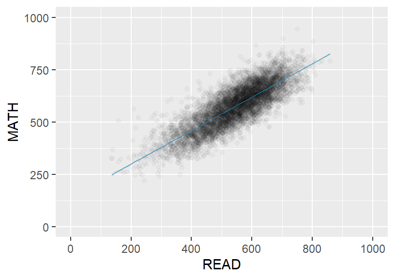
Plot 2 with transparency (alpha = 0.03)
code block
transscatter <- ggplot(cleaned_data, aes(x=READ, y=MATH) ) +
geom_point(alpha = 0.03) +
stat_poly_eq(use_label(c("eq", "R2"))) +
geom_smooth(method = lm, linewidth = 0.2, color = "#008FD5", alpha = 0.3) +
coord_cartesian(xlim = c(0, 1000), ylim = c(0, 1000)) +
scale_x_continuous(breaks = seq(0, 1000, by = 200),
minor_breaks = seq(0, 1000, by = 100))
transscatter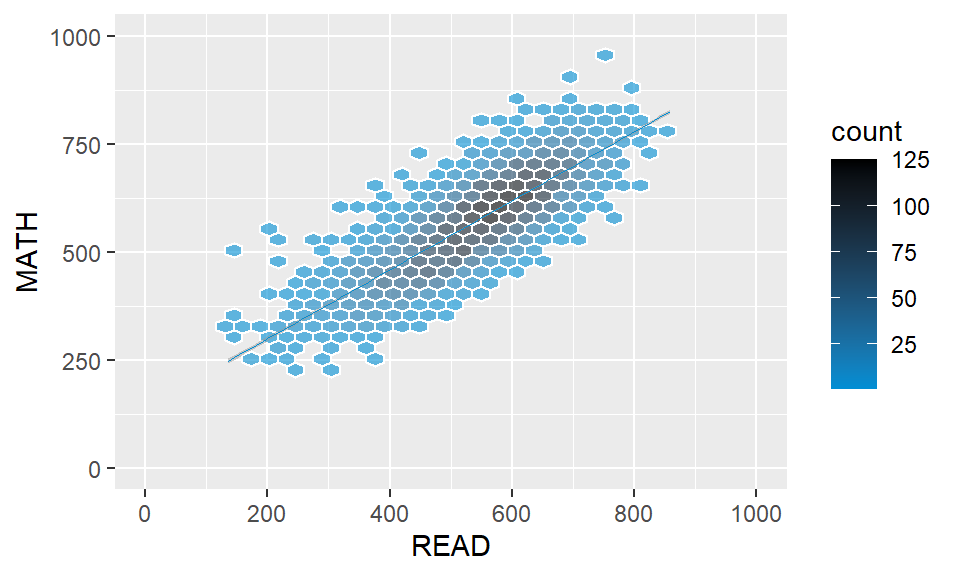
Plot 3 with hexagon binning (bins = 25)
code block
hexscatter <- ggplot(cleaned_data, aes(x=READ, y=MATH) ) +
geom_hex(bins = 25, color = "white", alpha = 0.6) +
scale_fill_gradient(low="#008FD5",high="black")+
stat_poly_eq(use_label(c("eq", "R2"))) +
geom_smooth(method = lm, linewidth = 0.2, color = "#008FD5", alpha = 0.4) +
coord_cartesian(xlim = c(0, 1000), ylim = c(0, 1000)) +
scale_x_continuous(breaks = seq(0, 1000, by = 200),
minor_breaks = seq(0, 1000, by = 100))
hexscatter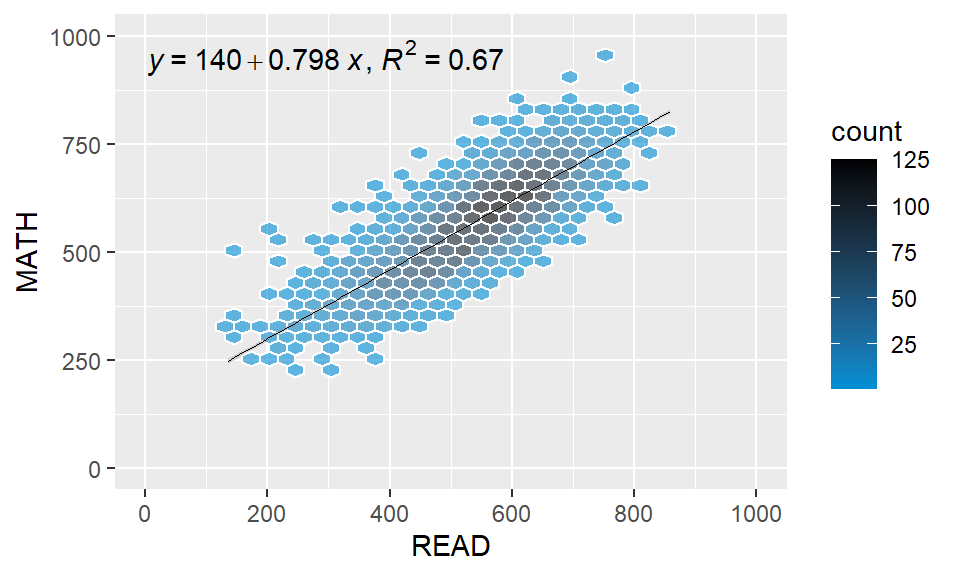
Plot 4 with 2D Histogram (bins = 25)
code block
twodscatter <- ggplot(cleaned_data, aes(x=READ, y=MATH) ) +
geom_bin2d(bins = 25, color = "white",alpha = 0.6) +
scale_fill_gradient(low="#008FD5",high="black")+
stat_poly_eq(use_label(c("eq", "R2"))) +
geom_smooth(method = lm, linewidth = 0.2, color = "#008FD5", alpha = 0.4) +
coord_cartesian(xlim = c(0, 1000), ylim = c(0, 1000)) +
scale_x_continuous(breaks = seq(0, 1000, by = 200),
minor_breaks = seq(0, 1000, by = 100))
twodscatter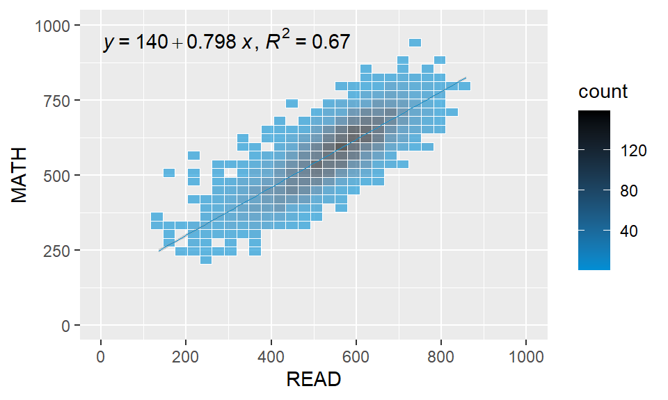
In the end, Plot 2 seemed the most aesthetically pleasing - since the scatterplot’s intention is to convey that there is a correlation between Reading and Math scores, and given that most scores cluster in the middle of the cloud, it appeared that binning or gradient colours made it messier.
2.2.4 Makeover
The code chunk below prepares the individual histogram plots for each subject.
code block
# Calculate midpoints
mean_math <- mean(cleaned_data$MATH)
readvsmath <- ggplot(cleaned_data, aes(x=READ, y=MATH) ) +
geom_point(alpha = 0.03) +
stat_poly_eq(use_label(c("eq", "R2")), hjust = -0.45, vjust = 1.5) +
geom_smooth(method = lm, linewidth = 0.2, color = "#008FD5", alpha = 0.3) +
coord_cartesian(xlim = c(0, 1000), ylim = c(0, 1000)) +
scale_x_continuous(breaks = seq(0, 1000, by = 200),
minor_breaks = seq(0, 1000, by = 100)) +
ylab('Math Scores') + xlab('Reading Scores')
readvsmath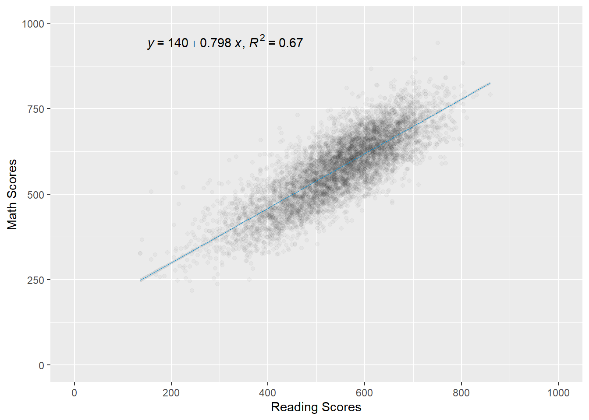
code block
readvssci <- ggplot(cleaned_data, aes(x=READ, y=SCIENCE) ) +
geom_point(alpha = 0.03) +
stat_poly_eq(use_label(c("eq", "R2")), hjust = -0.52, vjust = 1.5) +
geom_smooth(method = lm, linewidth = 0.2, color = "#008FD5", alpha = 0.3) +
coord_cartesian(xlim = c(0, 1000), ylim = c(0, 1000)) +
scale_x_continuous(breaks = seq(0, 1000, by = 200),
minor_breaks = seq(0, 1000, by = 100)) +
ylab('Science Scores') + xlab('Reading Scores')
readvssci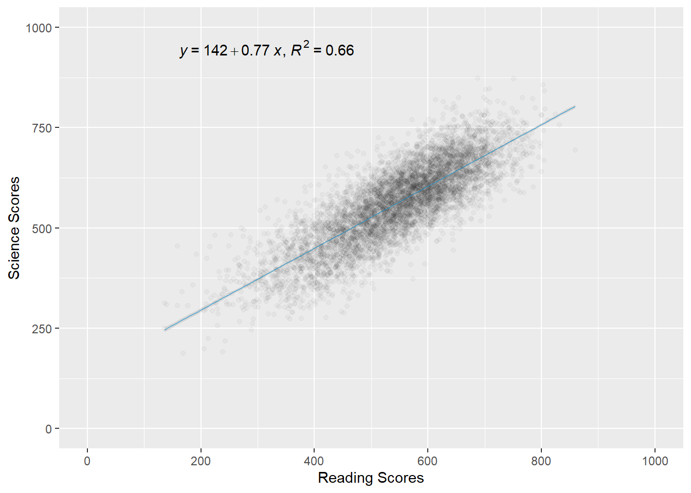
code block
mathvssci <- ggplot(cleaned_data, aes(x=MATH, y=SCIENCE) ) +
geom_point(alpha = 0.03) +
stat_poly_eq(use_label(c("eq", "R2")), hjust = -0.42, vjust = 1.5) +
geom_smooth(method = lm, linewidth = 0.2, color = "#008FD5", alpha = 0.3) +
coord_cartesian(xlim = c(0, 1000), ylim = c(0, 1000)) +
scale_x_continuous(breaks = seq(0, 1000, by = 200),
minor_breaks = seq(0, 1000, by = 100)) +
ylab('Science Scores') + xlab('Math Scores')
mathvssci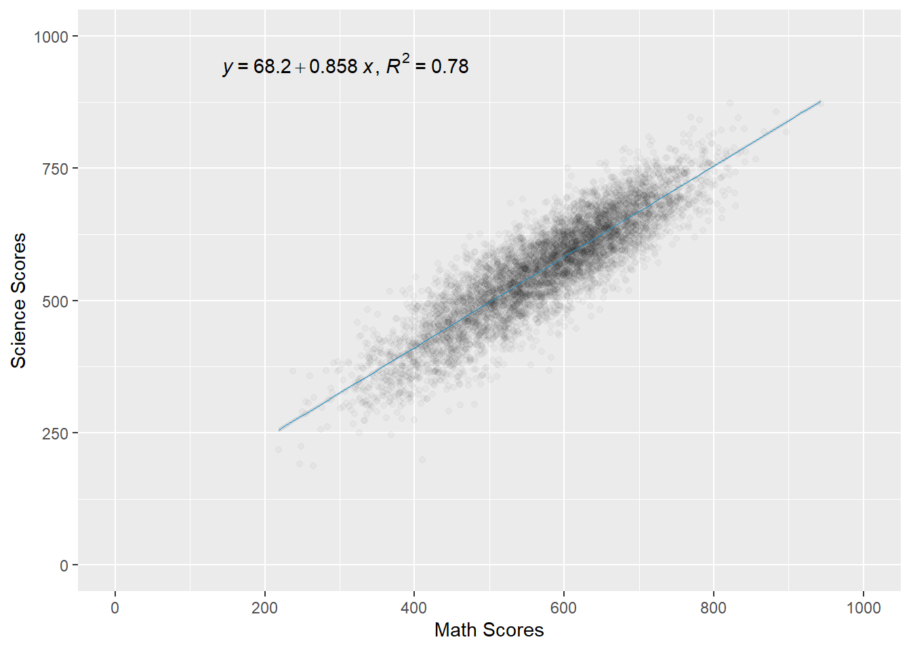
The code chunk below prepares the individual scatterplots for subject pairwise comparison as a composite figure.
code block
patchwork <- readvsmath + readvssci + mathvssci
patchwork <- patchwork +
plot_annotation(
title = "The higher you score in one subject, the more likely you will score higher in the other subjects.",
subtitle = "Strong positive linear relationships between Math, Reading and Science Scores.\nThis is especially true in Math and Science scores that have the strongest correlation.",
caption = "Data source: OECD PISA 2022",
theme = theme(plot.title = element_text(size = 50))
)
patchwork & theme_fivethirtyeight(base_size = 10) +
theme(
panel.grid.minor.x = element_line(linewidth = 0.2, linetype = 'solid', colour = "grey85"),
plot.title = element_text(face = "bold"), axis.title=element_text(face = "bold", size=9))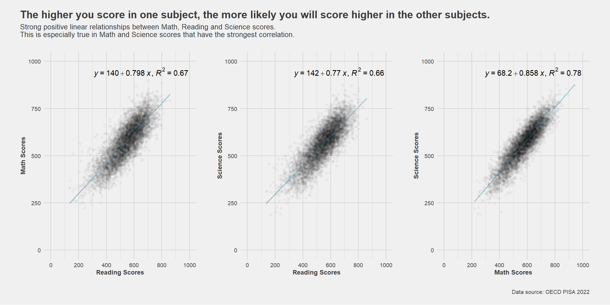